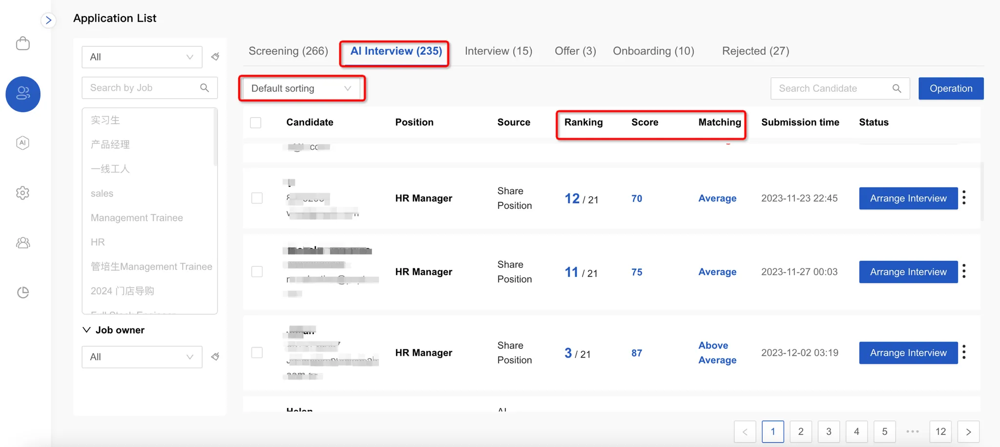

Head to the Candidate Management section to browse your candidate pool. You can easily search for candidates by their name, email, or phone number. Track candidates through different stages including screening, AI interview, follow-up interview, offer, pre-boarding, and rejection.

Simply click on any candidate to pull up their AI assessment report. From there, you can share or download the report, and move forward with next steps in the hiring process.